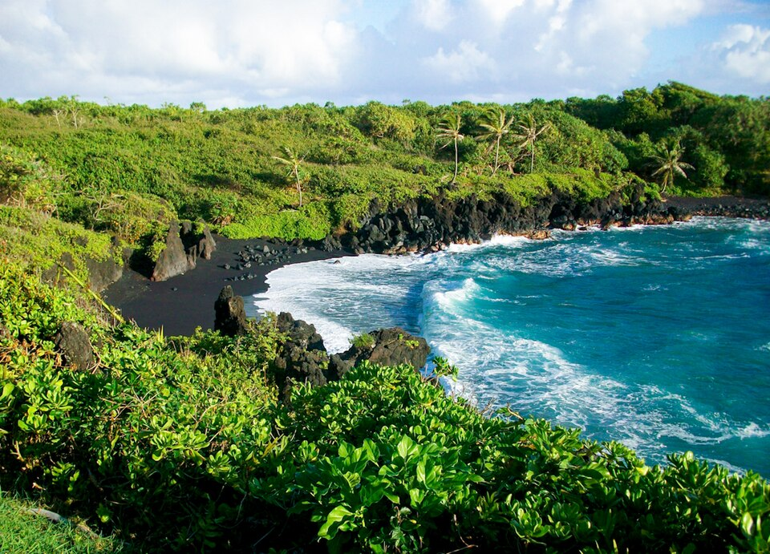

Waiʻānapanapa State Park
Place: Waiʻānapanapa State Park, Hāna, Maui
Type: State park / cultural landscape / coastal preserve
Story it tells: A rugged East Maui shoreline where freshwater, volcanic landscapes, Hawaiian history, and moʻolelo meet.

Waiʻānapanapa State Park is one of Maui's most recognizable coastal landscapes. Located just north of Hāna, the park is known for its black sand beach, lava tubes, sea arches, anchialine pools, and rugged volcanic shoreline. The name Waiʻānapanapa is commonly translated as “glistening fresh water,” a reference to the freshwater springs and pools that emerge from the lava landscape and have long provided water in this otherwise rocky coastal environment.
Although many visitors arrive for the dramatic scenery, Waiʻānapanapa is also an important cultural landscape. Archaeological sites throughout the park preserve Native Hawaiian habitation sites, trails, burial areas, shelters, walls, and other cultural features. The area formed part of a broader East Maui community connected by the ancient Piʻilani Trail, which linked districts around the island long before the construction of the modern Hāna Highway.
The park's coastline reflects the interaction between volcanic activity and the ocean. Paʻiloa Beach, the park's famous black sand beach, was formed when lava flows cooled and eroded into dark volcanic sand and pebbles. Nearby are sea caves, blowholes, lava arches, and freshwater-filled lava tubes that help explain both the landscape and the park's name. Native hala trees, seabird colonies, and coastal forests continue to shape the character of the shoreline.
Waiʻānapanapa is also associated with one of Maui's best-known legends. According to tradition, Princess Popoʻalaea sought refuge in a coastal cave while fleeing her husband, Chief Kaʻakea. After discovering her hiding place, he killed her, and local folklore connects her death to freshwater pools that occasionally appear red. Scientists attribute the coloration to tiny ʻopaeʻula shrimp.
Today, Waiʻānapanapa remains one of the most visited locations along the Road to Hāna. The park preserves a landscape where freshwater, Hawaiian history, archaeology, and moʻolelo continue to coexist along Maui's eastern shore.